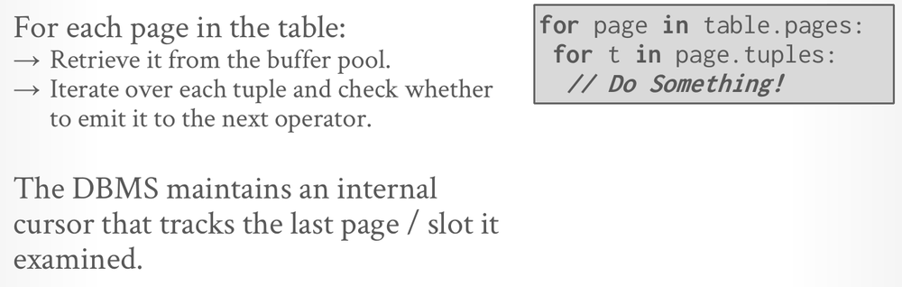

Database Internals in Go · Unit 6 · Lesson 2
P3.1 Sequential Scan
Write SeqScanExecutor: walk a table heap with its iterator, skip deleted tuples, apply the WHERE predicate the optimizer pushed into the scan with NULL counting as false, and return full batches that follow the executor contract.
Every query on a real table starts with a scan, and so does every test from here on: the delete and update tests read their input through your scan, and the SQL tests read every result back through it. The sequential scan is the access method with the least to it (Unit 5, Lesson 5): visit each page, look at each tuple, decide whether to emit it. Most of the work in this stage is getting BusTub's details right: which tuples count as present, where the WHERE clause went, and what a batch must look like.
Unit 1, Lesson 2: a BusTub tuple has an INTEGER column whose value is NULL. How is that stored?
Unit 2, Lesson 6: a function takes a ReadPageGuard on a page and returns without ever calling Drop. What is the lasting effect?
Unit 5, Lesson 5: in the iterator and vectorized models, what does a sequential scan operator keep between two calls to Next()?
What stage 1 asks for
A SeqScanPlanNode appears wherever a query reads a table. Its fields say which table (TableOID, TableName) and, possibly, which predicate (FilterPredicate, nil if none). Its output schema is the table's schema. The writeup's three hints for the executor are the whole spec, and the doc comments in execution/seq_scan_executor.go repeat them:
- Don't emit tuples that are deleted in the table heap: check the
IsDeletedfield of each tuple'sTupleMeta. - The output is a copy of each matching tuple together with its original record ID (RID).
- Mind the order of reading a tuple and advancing the table iterator (the writeup's warning about pre-increment and post-increment in C++).
To these the Go port adds the batch contract from Lesson 1, and one rule from BusTub's code: make the table iterator in Init.

Next calls; the "internal cursor" is the table iterator, which remembers a page and a slot (Lecture #13, slide 23).#13 Query Execution I, "Access methods" (41:57), slides 22–24: what an access method is, the sequential scan and its cursor, and the list of ways to speed it up.
The table heap and its iterator
A BusTub table is a table heap (table.TableHeap, in storage/table): a singly linked list of table pages in your buffer pool. Each table page is the slotted page from Unit 1, Lesson 2, with BusTub's layout: an 8-byte header (next page ID, tuple count, deleted count), then 24-byte slots, each holding a tuple's offset, size and TupleMeta, with tuple data growing down from the end of the page. The heap is pre-built. You reach it through the catalog: e.ExecutorContext().Catalog().GetTableByOID(e.plan.TableOID) returns a *catalog.TableInfo, or nil if there is no such table, and its Table field is the heap.
A table.TupleMeta has two fields, Ts (always 0 in Project 3; Project 4 puts timestamps there) and IsDeleted. A delete only sets IsDeleted: the tuple's bytes stay in the page and its slot is never reused, so the heap keeps returning deleted tuples to anyone who walks it. Skipping them is the scan's job.
You walk the heap with a *table.TableIterator:
| Call | Does |
|---|---|
heap.MakeIterator() | returns an iterator at the first tuple, which stops at the last tuple that existed when it was made |
it.IsEnd() | reports whether the iterator is past its last tuple |
it.GetTuple() | returns (TupleMeta, Tuple) at the current position, deleted or not; the Tuple is a copy of the bytes and already carries its RID |
it.RID() | returns the current position's RID (page ID, slot number) |
it.Next() | moves to the next tuple, following the page chain; at the end it does nothing |
Two properties of this iterator shape your executor.
First, it holds no page guard between calls. GetTuple and Next each take a read guard on the current page, copy what they need, and drop it before returning. So a scan that uses only the iterator pins nothing between your Next calls, however large the table. TestSeqScanMultiPageSmallPool checks exactly that: it scans 3,000 tuples of about 250 bytes, around 90 pages, through a pool of 8 frames, and checks the pin counts after every call.
Second, it has a stop point. MakeIterator records the last page and its tuple count at the moment it is called, and the iterator ends there, even if more tuples are appended later. Lesson 3 explains why: an UPDATE above your scan inserts the new version of each row into the same table, and a scan that kept going would find those new versions and update them again. That is why the doc comment asks you to make the iterator in Init, and why Init must make a fresh one each time it runs. TestSeqScanIgnoresTuplesInsertedAfterInit appends 5 rows between Init and the first Next and expects only the first 25. The heap also has MakeEagerIterator, which runs to the current end; it is for Project 4, not for this scan.
BusTub's iterator overloads operator++ and operator*, and the writeup warns that iter++ and ++iter differ: the post-increment form returns a copy of the old position. Go has no operator overloading, so the C++ pitfall turns into a plain question of order. Read the tuple and the RID with GetTuple and RID first, then call Next. After Next, the iterator already points at the following tuple, or at the end.
The predicate pushed into the scan
The planner puts a WHERE clause into a Filter node above the scan. The pre-built rule MergeFilterScan, which both rule lists run, then folds that Filter into the SeqScan below it as its FilterPredicate. In practice every WHERE clause on a single table reaches your scan this way, and so does the planner's true for a DELETE without WHERE:
bustub> EXPLAIN (o) DELETE FROM t1;
=== OPTIMIZER ===
Delete { table_oid=32 }
SeqScan { table=t1, filter=true }The writeup calls this "predicate pushdown to SeqScan", and it is the first step of the index-scan rule in stage 5: once the predicate sits in the scan, a later rule can look at it and decide to use an index instead.
A predicate is an expression tree (expressions.Expression). pred.Evaluate(&t, schema) evaluates it on one tuple laid out by schema (the plan's output schema, which for a scan is the table's) and returns a types.Value. A comparison returns a BOOLEAN, and SQL's three-valued logic applies: if either side is NULL, the result is NULL, not false. A WHERE clause keeps a row only when its predicate is true, so a NULL result must count as false. The pre-built FilterExecutor writes it as !v.IsNull() && v.AsBool(). Here is the effect, with the stage 1 and 2 executors in place:
bustub> SELECT * FROM t1;
+--------------+-------+
| t1.v1 | t1.v2 |
+--------------+-------+
| 1 | a |
| 2 | b |
| integer_null | c |
+--------------+-------+
bustub> SELECT * FROM t1 WHERE v1 > 1;
+-------+-------+
| t1.v1 | t1.v2 |
+-------+-------+
| 2 | b |
+-------+-------+
bustub> SELECT * FROM t1 WHERE v1 != v1;
+-------+-------+
| t1.v1 | t1.v2 |
+-------+-------+The NULL row fails v1 > 1 because NULL > 1 is NULL. It also fails v1 != v1, which is false for the other two rows; CMU's p3.02-insert.slt uses that predicate to insert nothing.
One batch, step by step
Next fills one batch per call. In words:
- Clear both slices.
- While the batch holds fewer than
batchSizetuples and the iterator is not at the end: read the meta, the tuple and the RID, then advance the iterator. - Skip the tuple if its meta says deleted, or if there is a predicate and it isn't true. Otherwise append the tuple and its RID.
- Return true if the batch holds anything, false if it is empty.
The loop stops either because the batch is full or because the table ran out, and the return value is the same rule in both cases. With 23 rows and a batch size of 10, the calls return 10, 10 and 3 tuples with true, and then false with an empty batch, as often as they are called; TestSeqScanBatchSizes checks exactly that sequence. A deleted or filtered tuple doesn't count toward the batch, so a full batch may take more than batchSize steps of the iterator.
Check your understanding
A table holds 23 tuples, and the tuples in positions 4 and 15 are deleted. Your scan has no predicate and is called with batchSize 10 until it returns false. What do the calls return?
A table t(a, b) holds (1, 5), (2, NULL), (3, 7), (4, 2) and (NULL, 9). The scan's FilterPredicate is b > 4. Which rows does it return?
Why does the scan make its table iterator in Init, and a new one each time Init runs?
Your scan reads a 90-page table through a buffer pool of 8 frames. Between two of its Next calls, how many pages does it hold pinned?
The table holds (1, 'a'), (2, 'b') and (NULL, 'c'), and the query is SELECT * FROM t1 WHERE v1 != v1. What does EXPLAIN (o) show, and how many rows come back?
Build it: sequential scan (stage P3.1)
You edit execution/seq_scan_executor.go: add fields to SeqScanExecutor, and write Init and Next. Run commands from go_db_internals/intro_to_db. The rules, in plain words:
Initlooks the table up by the plan'sTableOIDand makes a new iterator withMakeIterator, every time it runs. A missing table is an error, not a panic.Nextclears both slices, then appends up tobatchSizetuples, each with its RID, in heap order. It returns true for every non-empty batch, including the last partial one, and false with an empty batch once the table is exhausted, on every later call too.- Deleted tuples are skipped. With a
FilterPredicate, so are tuples for which it isn't true; NULL counts as false. - Read the tuple and RID before advancing the iterator.
-
What to think about
What must survive from one
Nextcall to the next? What doesInithave to reset so that a secondInit, even in the middle of a scan, starts from the first tuple? What should happen if the catalog has no table with that OID?The approach
Keep the
*catalog.TableInfo(or just its heap) and the*table.TableIteratorin the struct. InInit, get the table withGetTableByOIDfrom the executor context's catalog; if it is nil, return acommon.NewExceptionwith a message naming the OID. Then storeinfo.Table.MakeIterator(). That is allInitdoes.One key fragment
info := e.ExecutorContext().Catalog().GetTableByOID(e.plan.TableOID) // … nil check … e.iter = info.Table.MakeIterator() // stop point fixed here -
What to think about
Under which two conditions does the loop stop? Does a skipped tuple count toward the batch? What happens when
Nextis called again after it already returned false, and what are the slices holding at that point?The approach
Reset both slices to length 0. Loop while
len(*tuples) < batchSizeand the iterator is not at the end. In each step, take the meta and tuple fromGetTupleand the RID fromRID, then call the iterator'sNext. If the meta is deleted, continue. Otherwise append the tuple and the RID. After the loop, return whether the batch is non-empty. The tuple fromGetTupleis already a copy and carries its RID.One key fragment
meta, t := e.iter.GetTuple() rid := e.iter.RID() e.iter.Next() // read first, then advanceCheckpoint: scan without a predicateRun
go test -race -run '^TestSeqScan(EmptyTable|InsertionOrderAndRIDs|SkipsDeletedTuples|BatchSizes|ReInit|MultiPageSmallPool|IgnoresTuplesInsertedAfterInit)$' ./execution/. These seven tests don't use a predicate. Success printsok intro_to_db/execution. -
What to think about
The predicate may be nil. When it isn't, what does
Evaluatereturn for a row where the predicate's column is NULL, and what should the scan do with that row? Which schema describes the tuple you pass in?The approach
Read
e.plan.FilterPredicateonce per call. For each tuple that survived the deleted check, if the predicate is non-nil, evaluate it on the tuple with the executor's output schema, and skip the tuple unless the value is non-NULL and true.FilterExecutor.matchesinfilter_executor.gois the same test.One key fragment
v := pred.Evaluate(&t, e.OutputSchema()) if v.IsNull() || !v.AsBool() { continue // NULL counts as false }
From go_db_internals/intro_to_db, run:
go test -race -run '^TestSeqScan' -timeout 300s ./...It runs the nine executor tests in execution: EmptyTable, InsertionOrderAndRIDs, SkipsDeletedTuples, FilterPredicate, BatchSizes, ReInit, MultiPageSmallPool, IgnoresTuplesInsertedAfterInit and ThroughFactory, each with the TestSeqScan prefix. It also runs TestSeqScanSQL in sqllogictest, whose one subtest is CMU's p3.01-seqscan.slt (scans and projections of test_simple_seq_1 and test_simple_seq_2). Success prints ok for intro_to_db/execution and intro_to_db/sqllogictest; every other package shows [no tests to run] or [no test files]. It takes a few seconds once the build is cached.
On the starter, every test stops at the stub:
--- FAIL: TestSeqScanEmptyTable (0.00s)
seq_scan_executor_test.go:43: scanning an empty table: panic: TODO(P3): SeqScanExecutor.Init not implemented
at execution.(*SeqScanExecutor).Init (seq_scan_executor.go:40)
at execution.runFull.func1 (testutil_test.go:411)
...
--- FAIL: TestSeqScanSQL (0.00s)
--- FAIL: TestSeqScanSQL/p3.01-seqscan (0.03s)
stages_test.go:33: p3.01-seqscan.slt:3: unexpected error: internal error (panic): TODO(P3): SeqScanExecutor.Init not implementedThe most common mistake after that is returning false with the last, partial batch. Every multi-batch test then reports it, and the SQL test loses the rows:
--- FAIL: TestSeqScanBatchSizes (0.00s)
seq_scan_executor_test.go:110: Next call 3 with batch size 10 over 23 rows: got (false, 3 tuples, 3 RIDs), want (true, 3, 3); a batch is full unless the table ends, and Next must clear the slices first
...
--- FAIL: TestSeqScanSQL/p3.01-seqscan (0.03s)
stages_test.go:33: p3.01-seqscan.slt:3: wrong result (with sort_mode=NoSort)
--- expected (10 rows)
0
...
--- actual (0 rows)
--- explain (o)
=== OPTIMIZER ===
SeqScan { table=test_simple_seq_1 }
--- SQL
select * from test_simple_seq_1;To rerun only the SQL file with every record and result logged, use go test -race -run '^TestSeqScanSQL$/p3.01' -v ./sqllogictest/ -slt.verbose.
Init rather than in the constructor, or why a row with a NULL in the compared column never passes a filter. Ask your teacher (me) before moving on.
Primary sources: the CMU 15-445/645 Fall 2025 Project #3 writeup (Task #1, SeqScan; Optimizing SeqScan to IndexScan, predicate pushdown); Lecture #13 slides 22–24; BusTub at commit d49b823: src/include/execution/executors/seq_scan_executor.h, src/execution/seq_scan_executor.cpp, src/include/storage/table/table_heap.h, src/storage/table/table_iterator.cpp, src/include/storage/table/tuple.h, src/optimizer/merge_filter_scan.cpp, src/execution/filter_executor.cpp and test/sql/p3.01-seqscan.slt; this course's execution/seq_scan_executor.go, execution/seq_scan_executor_test.go, storage/table/table_heap.go and table_iterator.go.